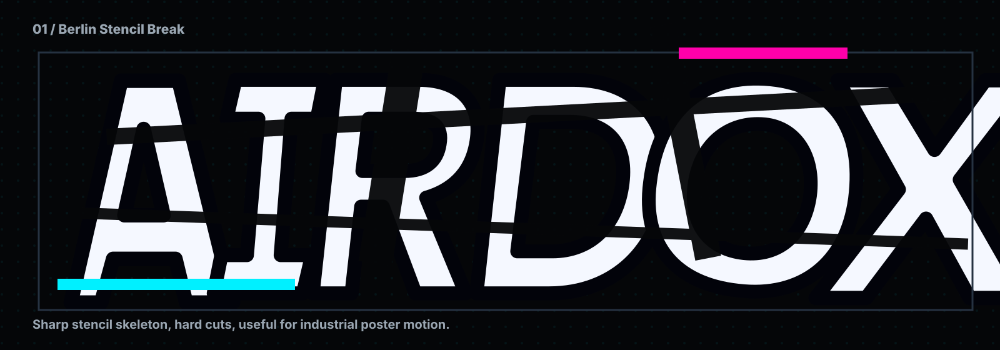
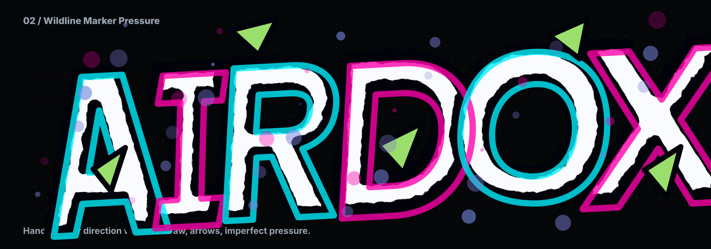
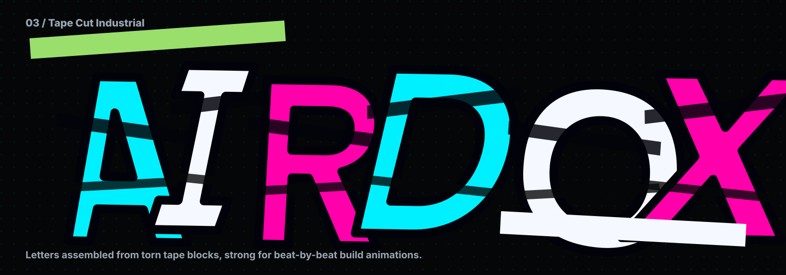
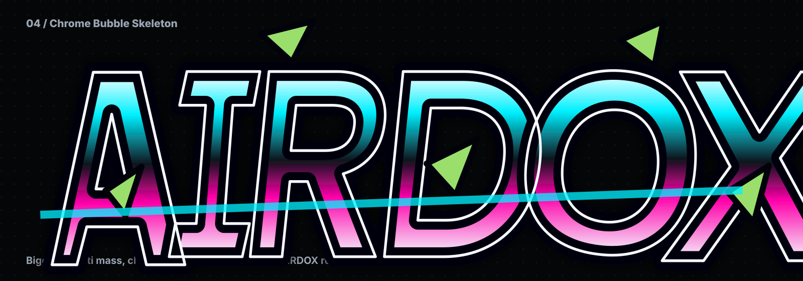
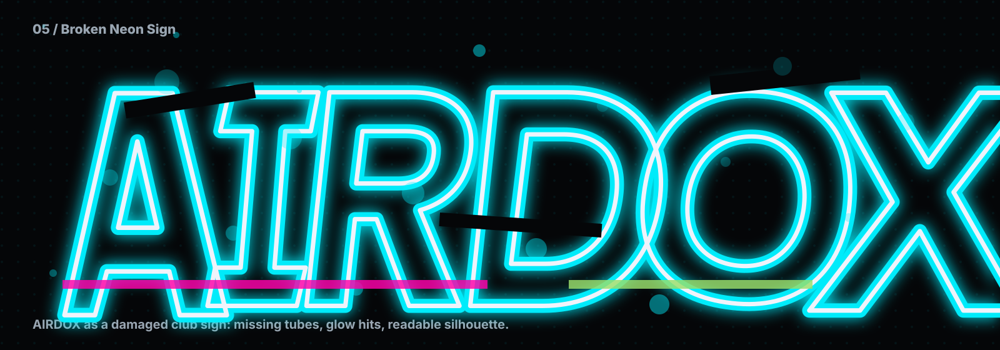
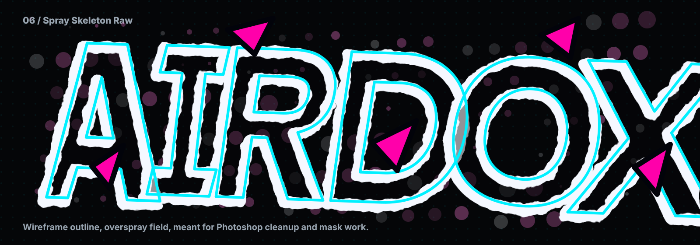
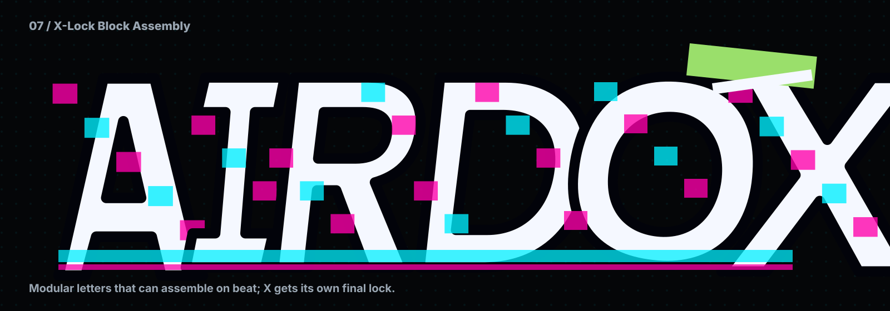
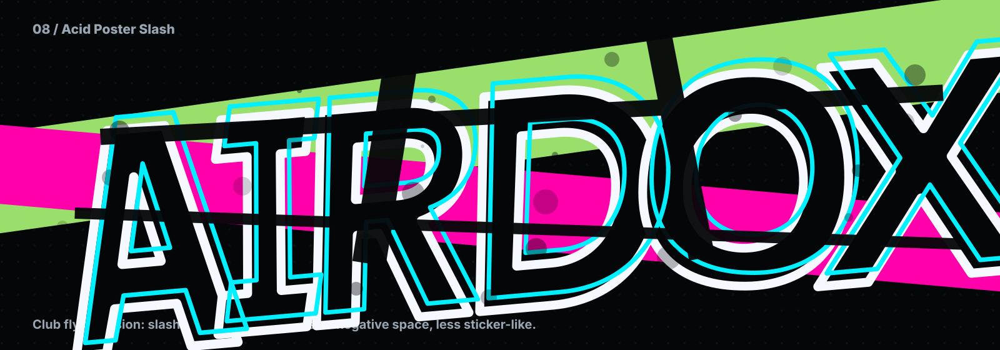

01. Berlin Stencil Break
Sharp stencil skeleton, hard cuts, useful for industrial poster motion.

Sharp stencil skeleton, hard cuts, useful for industrial poster motion.

Hand-marker direction with overdraw, arrows, imperfect pressure.

Letters assembled from torn tape blocks, strong for beat-by-beat build animations.

Bigger graffiti mass, chrome body, but with curated AIRDOX readability.

AIRDOX as a damaged club sign: missing tubes, glow hits, readable silhouette.

Wireframe outline, overspray field, meant for Photoshop cleanup and mask work.

Modular letters that can assemble on beat; X gets its own final lock.

Club flyer version: slash composition, aggressive negative space, less sticker-like.